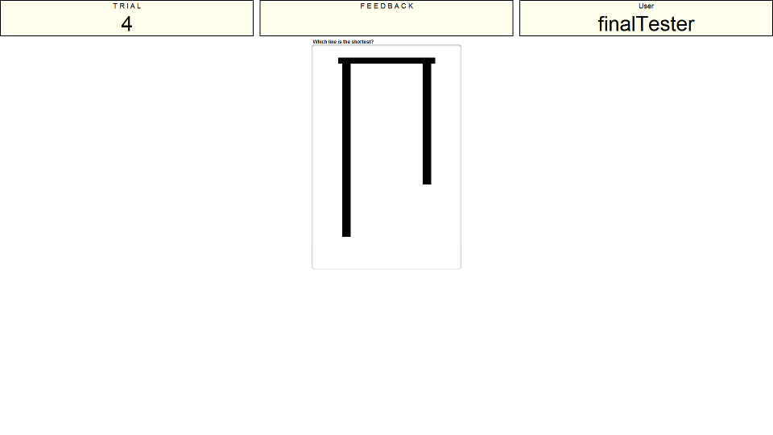
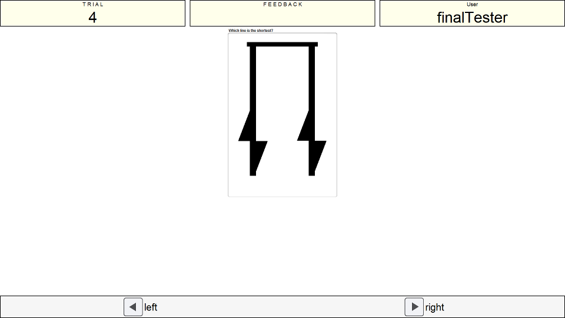

Instructions
This is the inspection time task. This task aims to uncover the amount of exposure time you need to a stimulus to be able to make accurate judgements on that stimuli. The two images below show you essentially all there is to this task. You will see two vertical lines but one of the lines will be shorter than the other (see image one). After a very short period of time these lines will be covered (see image two).


You need to say whether the left or the right line was the shortest and you give this response using the left and right keys on the keyboard. This is a test of accuracy, do not sacrifice accuracy for speed.